營養文章
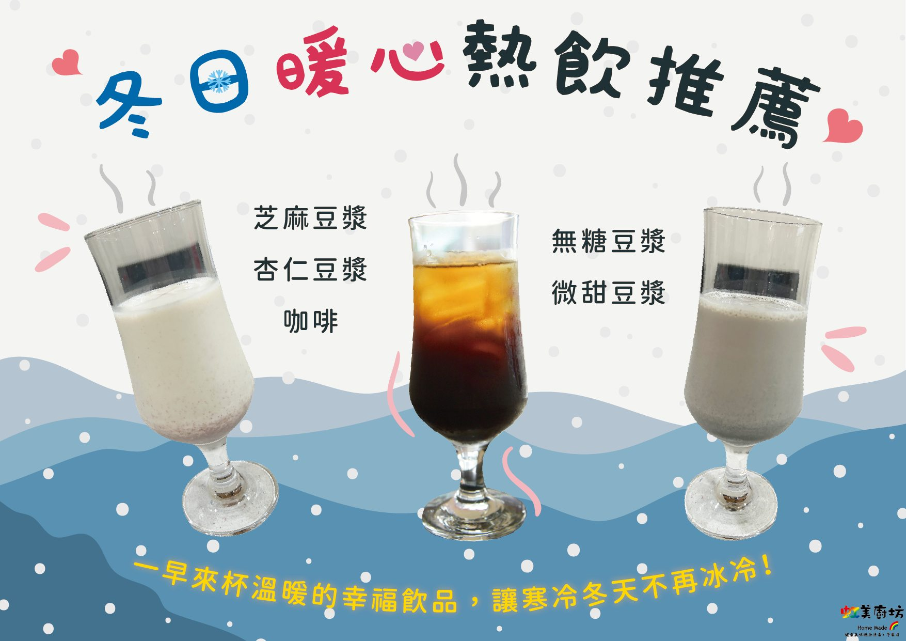
【冬日暖心熱飲推薦❄️】
🥰早餐部貼心為大家準備各種暖心熱飲，無論你是喜歡香濃的 芝麻豆漿、滑順的 杏仁豆漿，還是選擇 無糖豆漿 或 微甜豆漿，這裡通通都有～🥛
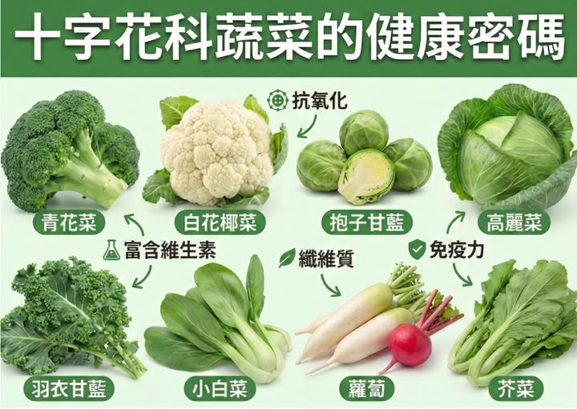
【冬日暖心熱飲推薦❄️】
🍀 #十字花科蔬菜的健康密碼 🍀 文 / 黃怡萱營養師 你餐桌上的高麗菜、青花菜、白花椰菜，其實都是默默守護健康的 #十字花科蔬菜！ 它們富含硫代葡萄糖苷、纖維、維生素C與K，切開或烹調後會轉化成對身體有益的活性物質✨ 💚 多吃的好處 ✔ 有助心臟健康、降低發炎 ✔ 可能降低癌症風險（仍需更多研究） ✔ 促進腸道好菌、幫助消化 ✔ 保護大腦、支持認知健康 ✔ 低熱量高纖維，幫助體重管理 👩⚕️ 小提醒 甲狀腺功能低下者避免大量「生食」，服用抗凝血藥物者可先諮詢醫師。 🥦 日常小改變：炒青花菜、加高麗菜沙拉、湯裡放蘿蔔或小白菜，美味又健康！ 小小一份 #十字花科蔬菜，就是給身體最溫柔的照顧 💕
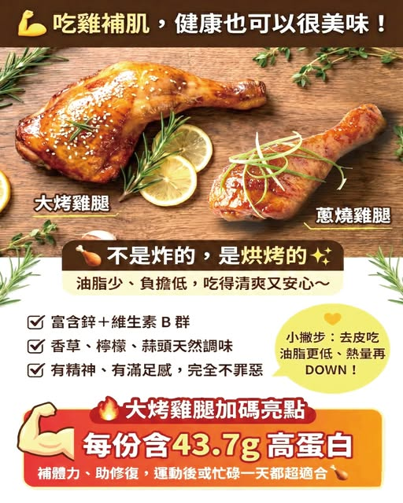
【冬日暖心熱飲推薦❄️】
💪 吃雞補肌，健康也可以很美味！ 🍗 大烤雞腿 & 蔥燒雞腿 不是炸的，是烘烤的✨ 油脂少、負擔低，吃得清爽又安心～ ✔ 富含鋅＋維生素 B 群 ✔ 香草、檸檬、蒜頭天然調味 ✔ 有精神、有滿足感，完全不罪惡 💛 小撇步：去皮吃 油脂更低、熱量再 DOWN！ 🔥 大烤雞腿加碼亮點 每份含 43.7g 高蛋白，補體力、助修復， 運動後或忙碌一天都超適合 🍗

2024年最佳糖尿病飲食
美國新聞與世界報導（U.S. News & World Report）選出 2024 年 最佳 10 種糖尿病飲食榜單(Best Diabetes Diets 2024 top 10)，分別為 地中海飲食、得舒飲食、彈性素食飲食、麥得飲食、純素飲食、體重觀 察者飲食、梅約診所飲食、生酮飲食(The Ketogenic Diet)、奧尼什飲 食(Ornish Diet)及原始飲食(The Paleo Diet)。
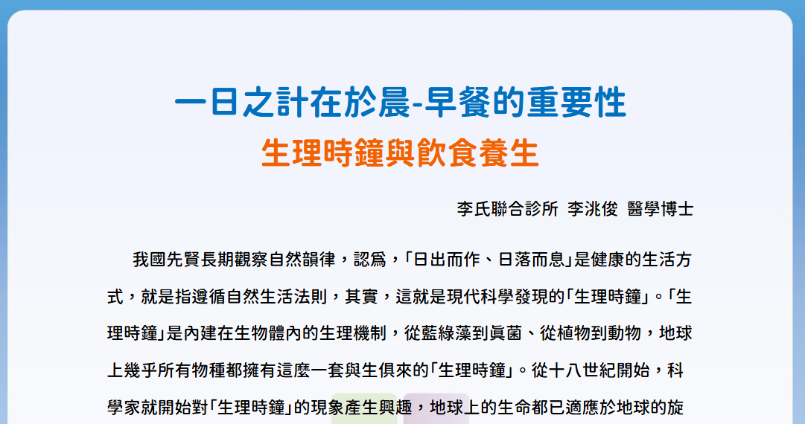
一日之計在於晨-早餐的重要性
我國先賢長期觀察自然韻律，認為，「日出而作、日落而息」是健康的生活方式，就是指遵循自然生活法則，其實，這就是現代科學發現的「生理時鐘」。
.png)
麥得飲食(MIND diet)
這是一種經過科學驗證的飲食計劃，旨在保護大腦功能並預防神經退化性疾病，包括與年齡相關的認知能力下降和失智症。
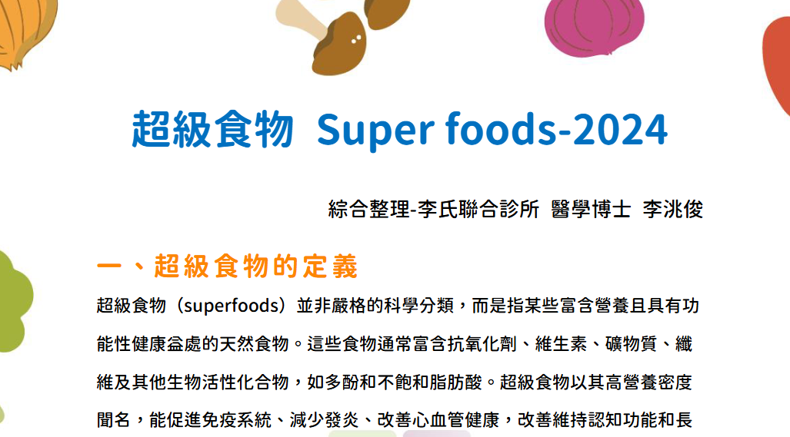
超級食物 Super foods-2024
超級食物（superfoods）並非嚴格的科學分類，而是指某些富含營養且具有功能性健康益處的天然食物。這些食物通常富含抗氧化劑、維生素、礦物質、纖維及其他生物活性化合物，如多酚和不飽和脂肪酸。
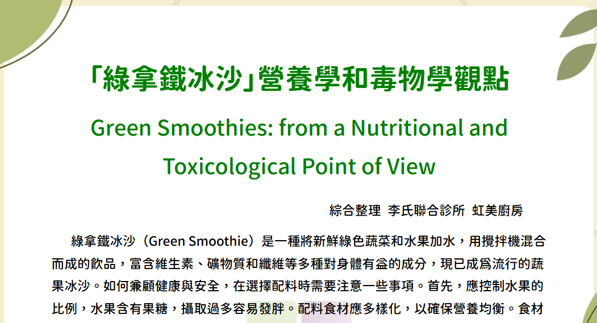
綠拿鐵冰沙營養學和毒物學觀點
綠拿鐵冰沙（Green Smoothie）是一種將新鮮綠色蔬菜和水果加水，用攪拌機混合而成的飲品，富含維生素、礦物質和纖維等多種對身體有益的成分，現已成為流行的蔬果冰沙。如何兼顧健康與安全，在選擇配料時需要注意一些事項。
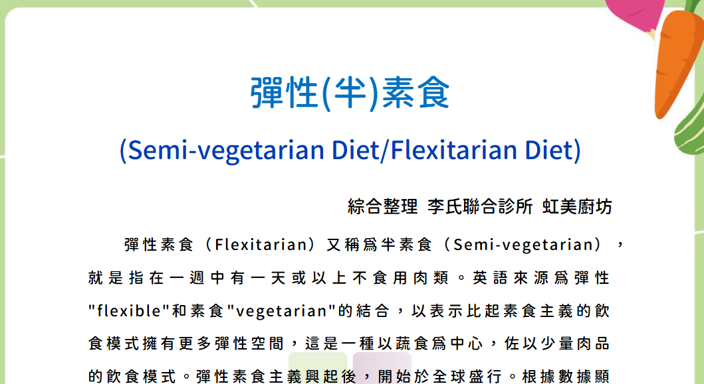
彈性(半)素食
彈性素食（F l e x i t a r i a n ）又 稱 為半 素食 （ S e m i - v e g e t a r i a n ） ，就 是 指 在 一 週 中 有 一 天 或 以 上 不 食 用 肉 類 。
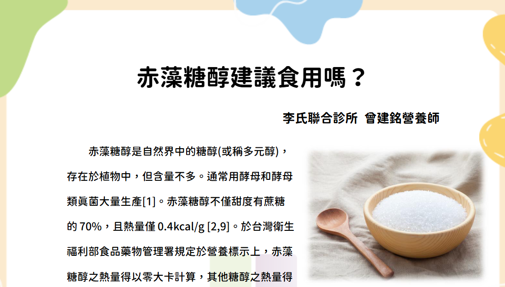
赤藻糖醇建議食用嗎
赤藻糖醇於多項文獻中被指出能夠做為精緻醣類替代品，因其對於血糖波動及胰島素產生沒有影響，並能促進腸道激素分泌，調節飽食中樞增加飽足感達到減重效果。
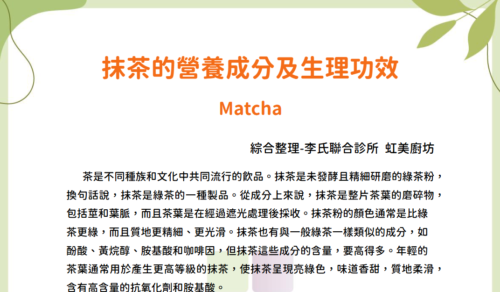
抹茶的營養成分及生理功效
抹茶以其抗氧化和抗發炎特性而聞名，主要是含有兒茶素 EGCG。已有多項 實驗研究報告，發現抹茶對人類健康有益的影響。
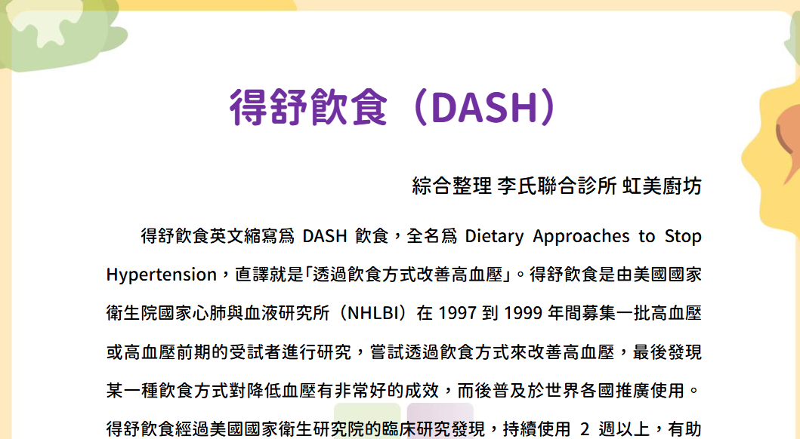
得舒飲食（DASH）
得舒飲食與低碳飲食、地中海飲食都被美國糖尿病學會認為是有助於血糖控制飲食模式之一。
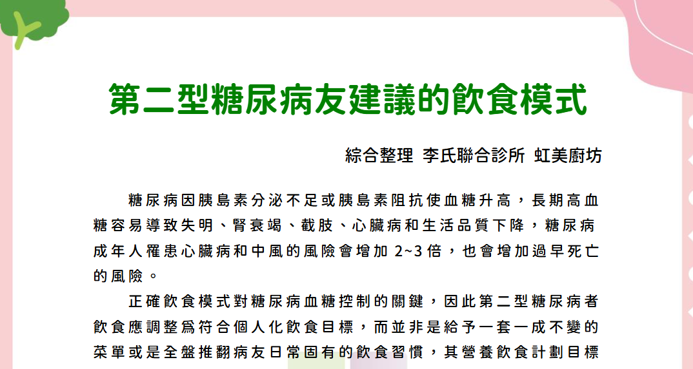
第二型糖尿病友建議的飲食模式
對第 二型糖尿病友有益的四種飲食模式，飲食內容中其共同 特色 為 含 有 較 多 種 類 的 植 物 性 食 品 ， 包 括 蔬 菜、豆 類、全 穀 類、水 果、堅果，以及含有較多不 飽和油脂攝取，避免動物性肉類和過度加工食品 。由專業醫師或營養師指導， 適當限制個人攝取總量，管理體重才能達到有助疾病控制。
抹茶的營養成分及生理功效
抹茶含有高濃度的兒茶素與胺基酸。本研究探討抹茶如何透過抗氧化作用提升人體免疫力與代謝健康。
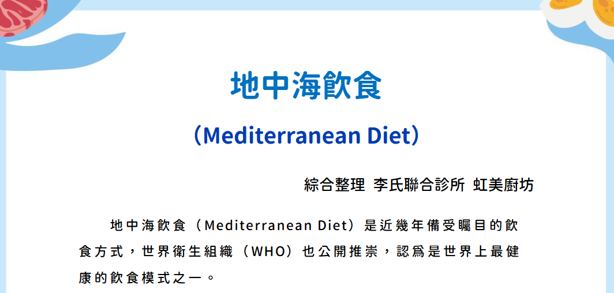
地中海飲食指南
備受 WHO 推崇的飲食方式，強調優質油脂與原型食物。本篇 PDF 深入解析其對心血管健康的正面影響。
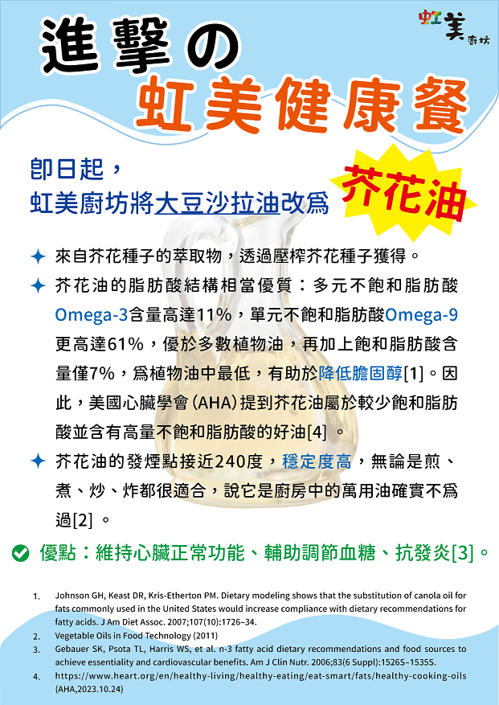
葵花油 / 芥花油
葵花油富含維生素 E 與不飽和脂肪酸，能維持細胞膜完整性並具抗氧化作用；芥花油則含較多 Omega-3，有助於調節生理機能與心血管保健。
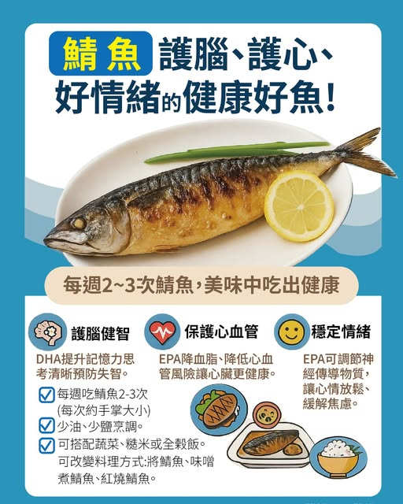
鯖魚的好處
🐟 鯖魚真的超級營養！ DHA、EPA 通通都有，能幫助提升記憶力、保護心臟、還能讓心情更放鬆。 📌 簡單吃法建議： ・一週 2–3 次（手掌大小就好） ・少油少鹽最健康 ・烤的、味噌煮、紅燒都 OK！ 好吃又顧健康，鯖魚真的可以多吃一點 ❤️